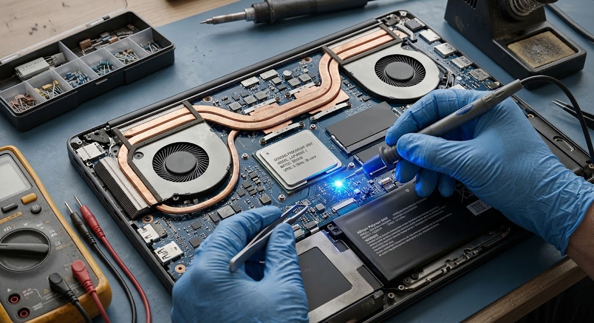

Reparación y mantenimiento de hardware
Revisamos computadoras de escritorio, laptops, tarjetas gráficas, placas madre, monitores y equipos médicos o electrónicos. Te asesoramos sobre repuestos y alternativas personalizadas a partir del diagnóstico.
Alcance del servicio
- Cambio de pantalla, batería y teclado.
- Instalación o actualización de SSD y memoria RAM.
- Limpieza interna, lavado ultrasónico de componentes compatibles y cambio de pasta térmica, según evaluación técnica.
- Diagnóstico de tarjetas gráficas, placas madre y monitores.
- Evaluación de equipos médicos y electrónicos según modelo, falla y requisitos técnicos aplicables.
- Asesoría de repuestos según compatibilidad y disponibilidad.
